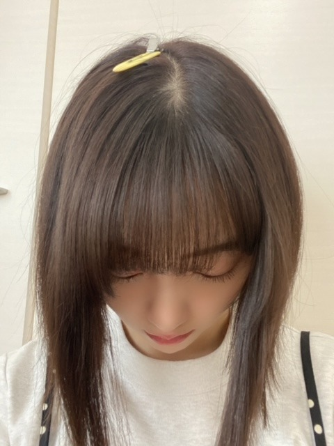
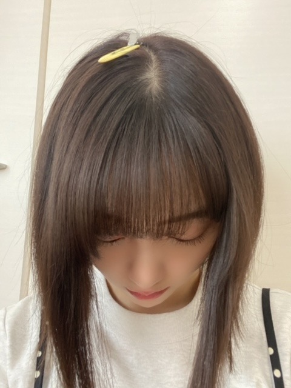

2020/1006Tue後悔はあっても前悔はない
帰り道、金木犀の香りがふわっとしてきて
ものすごく突然の秋を感じました
朝、家の窓を開けると涼しくて湿度のない秋風に
金木犀と太陽の匂いが混ざって幸せな気持ちになります
秋って美味しい食べ物が増えて
紅葉という景色が見られて
ただでさえ味覚と視覚は癒されているのに
嗅覚までも満たされるなんて。
そして生まれ月でもある10月があり
美味しいご飯も食べられる。
ああ、いい季節だなぁと思っています
秋を象徴するものに出会うたび、改めて四季の素晴らしさに気づくことができます

この間arの撮影終わりかな
かわいいメイクしてもらったまま現場に行ったら
かずみさん 真夏さん いくちゃん が
かわいい〜痩せた〜？って一斉に
褒めてくれました笑
みんなといる時間が当たり前でなにより楽しくて
でも当たり前っていうものはないし
大事にしないとなーって。
1期生の先輩達といて思うのは
先輩後輩関係じゃなかったら
友達になりたかったなって思う方ばかりなんです
それくらいみんなフレンドリーで楽しい☺︎
後輩はもうね、妹みたいなかんじ
みんな妹なんです
厳しくも甘くもしちゃうし守らなきゃって思ってます
たくさん頼ってほしいな...
頼りないけどm(._.)m
これがarのときのメイク^ - ^
もうすっかり寒くなってきましたね〜

みなさん体調には気をつけてください^ - ^
最近はアマプラでmodern love観てて
netflix でサイコだけど大丈夫観てて
Abema TVでオオカミくん観てます
おすすめドラマ映画などあったら
教えてください^ - ^
では
帰り道、金木犀の香りがふわっとしてきて
ものすごく突然の秋を感じました
朝、家の窓を開けると涼しくて湿度のない秋風に
金木犀と太陽の匂いが混ざって幸せな気持ちになります
秋って美味しい食べ物が増えて
紅葉という景色が見られて
ただでさえ味覚と視覚は癒されているのに
嗅覚までも満たされるなんて。
そして生まれ月でもある10月があり
美味しいご飯も食べられる。
ああ、いい季節だなぁと思っています
秋を象徴するものに出会うたび、改めて四季の素晴らしさに気づくことができます

この間arの撮影終わりかな
かわいいメイクしてもらったまま現場に行ったら
かずみさん 真夏さん いくちゃん が
かわいい〜痩せた〜？って一斉に
褒めてくれました笑
みんなといる時間が当たり前でなにより楽しくて
でも当たり前っていうものはないし
大事にしないとなーって。
1期生の先輩達といて思うのは
先輩後輩関係じゃなかったら
友達になりたかったなって思う方ばかりなんです
それくらいみんなフレンドリーで楽しい☺︎
後輩はもうね、妹みたいなかんじ
みんな妹なんです
厳しくも甘くもしちゃうし守らなきゃって思ってます
たくさん頼ってほしいな...
頼りないけどm(._.)m
これがarのときのメイク^ - ^
もうすっかり寒くなってきましたね〜
みなさん体調には気をつけてください^ - ^
最近はアマプラでmodern love観てて
netflix でサイコだけど大丈夫観てて
Abema TVでオオカミくん観てます
おすすめドラマ映画などあったら
教えてください^ - ^
では
2020/10/06 13:38
コメント(393)
更新、有難うございます。良いブログすぎて、涙が出ました。
未央奈更新ありがとう！
乃木坂はみんな仲良くて本当にいいグループだと思うし、そんなグループのファンになれて、その中でも未央奈が大好きになれて改めて良かった！
大好き
乃木坂はみんな仲良くて本当にいいグループだと思うし、そんなグループのファンになれて、その中でも未央奈が大好きになれて改めて良かった！
大好き
堀ちゃん、詩人やなー

みんな仲が良いということは、当たり前なことではないですね。
むしろ珍しいと思います。
(^^)
沖縄はまだ寒くはないのでＴシャツで充分です。
というか、立っているだけで汗かきます。
むしろ珍しいと思います。
(^^)
沖縄はまだ寒くはないのでＴシャツで充分です。
というか、立っているだけで汗かきます。
確かにいまが一番過ごしやすい季節かもしれませんね♪
オススメかぁ 最近見たのは、3Dリアルガールと かぐや様は告らせたいかな
コメディタッチだから展開が面白くて楽しく見れます！＼(^o^)／
オススメかぁ 最近見たのは、3Dリアルガールと かぐや様は告らせたいかな
コメディタッチだから展開が面白くて楽しく見れます！＼(^o^)／
かわいいー
私もキンモクセイ大好きです
愛の不時着おすすめです！
愛の不時着おすすめです！
みおな
ね！
過ごしやすい気候になってきたね。
朝晩は肌寒いくらいだもんね。
自分も体調気をつけよーっと。
ね！
過ごしやすい気候になってきたね。
朝晩は肌寒いくらいだもんね。
自分も体調気をつけよーっと。
modern love 観ようかな☺︎
今はね、冬のソナタを久しぶりに観てる、懐かしい(*´-`)
未央奈ちゃん観たことある？
[けんけん]
今はね、冬のソナタを久しぶりに観てる、懐かしい(*´-`)
未央奈ちゃん観たことある？
[けんけん]
「みんなといる時間が当たり前でなにより楽しくて
でも当たり前っていうものはないし
大事にしないとなーって。
1期生の先輩達といて思うのは
先輩後輩関係じゃなかったら
友達になりたかったなって思う方ばかりなんです
それくらいみんなフレンドリーで楽しい☺︎」
って部分、マジで感動して涙出た
未央奈も体調には十分気をつけてね！
でも当たり前っていうものはないし
大事にしないとなーって。
1期生の先輩達といて思うのは
先輩後輩関係じゃなかったら
友達になりたかったなって思う方ばかりなんです
それくらいみんなフレンドリーで楽しい☺︎」
って部分、マジで感動して涙出た
未央奈も体調には十分気をつけてね！
更新ありがとうございます！
金木犀って香りは勿論お花も素敵ですよね。
金木犀の香りがすると、どこに木があるのかなーって探しちゃいます。小さくて可愛いですよね。
肌寒く感じる時も増えてきましたのでお体ご自愛ください。
金木犀って香りは勿論お花も素敵ですよね。
金木犀の香りがすると、どこに木があるのかなーって探しちゃいます。小さくて可愛いですよね。
肌寒く感じる時も増えてきましたのでお体ご自愛ください。
未央奈さん、ブログありがとう！
未央奈さんの写真はみんな大好きで、どれもいいと思うのですが、とりわけ良いのはウインクした写真です。ウインクした未央奈がとにかく魅力的で、今回もドキドキうっとりしてます。
秋はいいですね。美味しいし、風景もキレイ。未央奈さんも秋には一段と映えるのでいい季節だと思います。
ただ、気温の変化が激しくなるので、体調に気をつけてね。
未央奈さんの写真はみんな大好きで、どれもいいと思うのですが、とりわけ良いのはウインクした写真です。ウインクした未央奈がとにかく魅力的で、今回もドキドキうっとりしてます。
秋はいいですね。美味しいし、風景もキレイ。未央奈さんも秋には一段と映えるのでいい季節だと思います。
ただ、気温の変化が激しくなるので、体調に気をつけてね。
ブログ更新ありがとうございます。
最近金木犀の香りが本当に良いですよね。秋が来たなって感じます。もしかしたら一番好きな季節かもしれないです。
美味しいご飯でも食べに行きたいですね。
先輩に恵まれてる環境っていいですよね。自分の成長を助けてくださりますし。僕も生まれ変わったら乃木坂に入りたいです。
寒くなってきたので体調にお気をつけください。
可愛い写真ありがとうございます。
最近金木犀の香りが本当に良いですよね。秋が来たなって感じます。もしかしたら一番好きな季節かもしれないです。
美味しいご飯でも食べに行きたいですね。
先輩に恵まれてる環境っていいですよね。自分の成長を助けてくださりますし。僕も生まれ変わったら乃木坂に入りたいです。
寒くなってきたので体調にお気をつけください。
可愛い写真ありがとうございます。
映像研！おすすめ！
みおなさま、ありがとうございます
物事を意味のあること無いことにするのは自分次第ですから。
今を大切に生きましょう！
今を大切に生きましょう！
未央奈ちゃんブログありがとうー(﹡ˆˆ﹡)
インスタもたくさん更新してくれて嬉しい！！
未央奈ちゃんもお体に気をつけてね
インスタもたくさん更新してくれて嬉しい！！
未央奈ちゃんもお体に気をつけてね
ブログ更新ありがとうございます！
秋は本当にいい季節ですよね。僕は運動部なのでこれぐらいの気温がちょうどいいです。未央奈さんも体調などにはお気をつけて。
秋は本当にいい季節ですよね。僕は運動部なのでこれぐらいの気温がちょうどいいです。未央奈さんも体調などにはお気をつけて。
未央奈ちゃんブログ更新ありがとう!!!
arのメイクめっちゃ可愛い！！
インスタにあげていたのを見て、めっちゃ可愛いと思って、肌白って驚いた！！
メンバーとこれからも仲良くしてね！！
未央奈ちゃんが楽しんでいるの知ると本当に幸せ♪♪
フォロワー突破と有吉の反省会とグータッチおめでとう!!!
これからも大好き⸜❤︎⸝
鎌倉ものがたり好きなんだけど未央奈ちゃんはスキー？？
arのメイクめっちゃ可愛い！！
インスタにあげていたのを見て、めっちゃ可愛いと思って、肌白って驚いた！！
メンバーとこれからも仲良くしてね！！
未央奈ちゃんが楽しんでいるの知ると本当に幸せ♪♪
フォロワー突破と有吉の反省会とグータッチおめでとう!!!
これからも大好き⸜❤︎⸝
鎌倉ものがたり好きなんだけど未央奈ちゃんはスキー？？
更新ありがとう
和ラーの動画みたよ❗
岐阜の悪魔ってあんまりだよね。
でも、未央奈ちゃんの表情がたまらないよ。
TVで見る事も多くなってきて、嬉しい限りです。
これからも出まくってください！
未央奈ちゃん、大好き❤️
和ラーの動画みたよ❗
岐阜の悪魔ってあんまりだよね。
でも、未央奈ちゃんの表情がたまらないよ。
TVで見る事も多くなってきて、嬉しい限りです。
これからも出まくってください！
未央奈ちゃん、大好き❤️
関係ないけど今日俺の誕生日！！ブログあげてくれてうれしいわ
うちの庭の金木犀も、良い匂いを漂わせてます。
柿もだいぶ色付きましたね。
ただうちの柿は渋柿なので、渋抜きするか、干し柿にしないと食べられないんですけどね。
秋だなぁ♪☆
柿もだいぶ色付きましたね。
ただうちの柿は渋柿なので、渋抜きするか、干し柿にしないと食べられないんですけどね。
秋だなぁ♪☆
やっほー
最近は夜も結構寒くなってきたよね
有吉反省会見たよ！めっちゃ可愛くてびっくりしました！
要所要所でコメント抜かれててみおちゃんすごいなって思ったしおもしろかったです！！
おすすめのドラマは見たことあるかもしれないけど｢ヒモメン｣をおすすめします
最近川口春奈さんが見たいなと思って見始めました
よかったら見てみてね！
季節の変わり目やし体調には気をつけてね、お仕事ふぁいと！！
最近は夜も結構寒くなってきたよね
有吉反省会見たよ！めっちゃ可愛くてびっくりしました！
要所要所でコメント抜かれててみおちゃんすごいなって思ったしおもしろかったです！！
おすすめのドラマは見たことあるかもしれないけど｢ヒモメン｣をおすすめします
最近川口春奈さんが見たいなと思って見始めました
よかったら見てみてね！
季節の変わり目やし体調には気をつけてね、お仕事ふぁいと！！
ブログ更新ありがとう！！
こちらこそ体調を崩さずに~
こちらこそ体調を崩さずに~
未央奈可愛すぎるキュンです❤
みおなぁ！ ブログ更新ありがとう！
写真可愛すぎぃぃぃぃい！！！！！
これからも色々頑張って！
未央奈大好きぃぃぃぃぃいい♡♡♡
写真可愛すぎぃぃぃぃい！！！！！
これからも色々頑張って！
未央奈大好きぃぃぃぃぃいい♡♡♡
最近ほんとに肌寒いですね！
体調に気をつけなきゃ！と思います。
しかしながらほんとにいい季節です！
美味しいもの、いい匂い、良い気候に癒されています！
未央奈さんも体調に気をつけて良い誕生月になりますように！
体調に気をつけなきゃ！と思います。
しかしながらほんとにいい季節です！
美味しいもの、いい匂い、良い気候に癒されています！
未央奈さんも体調に気をつけて良い誕生月になりますように！
ネトフリの【私のIDはカンナム美人】
オススメです！！！！
男の子が超絶かっこいいです
あまりにイケメン過ぎて
「人間界に産み落としてくれてありがとう」
ってコメントありました笑
女性も美人 さすが韓国！！！
あと今配信中の【青春の記憶】も
おもしろいですよー^^
めちゃくちゃ可愛いです！
これからも応援してます！
これからも応援してます！
未央奈さん可愛い❤️
未央奈ブログ更新(*´▽`人)ｱﾘｶﾞﾄｳ♡
金木犀の香りめちゃくちゃいいよね〜
秋ってちょっと寒いけど暑すぎなくて過ごしやすいし1番好きな季節かな！！
おイモ 食べたくなってきた〜
金木犀の香りめちゃくちゃいいよね〜
秋ってちょっと寒いけど暑すぎなくて過ごしやすいし1番好きな季節かな！！
おイモ 食べたくなってきた〜
すちやよ♥️
そのとーり！
太陽ノックの全国握手会で緊張して
言えなかったけど、未央奈は
乃木坂46に欠かせない存在です。
今は後輩も増えてあの頃以上に。
これからも1日も長く乃木坂46
メンバーとして活躍しててほしいです♥
言えなかったけど、未央奈は
乃木坂46に欠かせない存在です。
今は後輩も増えてあの頃以上に。
これからも1日も長く乃木坂46
メンバーとして活躍しててほしいです♥
大人っぽい！
みおなちゃん！
arのみおなちゃんのインタビューみたよー！！
ショートヘアのアレンジ色々みたいな！！
ショートヘアにすると幼くなるから
そうならないアレンジ教えて欲しい
今日も素敵な写真ありがとう！✨
arのみおなちゃんのインタビューみたよー！！
ショートヘアのアレンジ色々みたいな！！
ショートヘアにすると幼くなるから
そうならないアレンジ教えて欲しい
今日も素敵な写真ありがとう！✨
堀ちゃんブログ更新ありがとうございます。
堀ちゃん今日も１日お疲れ様です。
堀ちゃん今日も可愛いです。
今日はお仕事でした。
今さっきお仕事終わりました。
今日は１日作業日でした。
凄く疲れました。
こないだ浴衣の生写真届きました。
堀ちゃんの浴衣の生写真出ました。
凄く可愛かったです。
これからも堀ちゃんの生写真買いますね。
これからもお仕事頑張って下さい。
自分もお仕事頑張ります。
堀ちゃん今日も１日お疲れ様です。
堀ちゃん今日も可愛いです。
今日はお仕事でした。
今さっきお仕事終わりました。
今日は１日作業日でした。
凄く疲れました。
こないだ浴衣の生写真届きました。
堀ちゃんの浴衣の生写真出ました。
凄く可愛かったです。
これからも堀ちゃんの生写真買いますね。
これからもお仕事頑張って下さい。
自分もお仕事頑張ります。
ブログ読んで、改めて未央奈ちゃんの性格もっと好きになった
本当に誰よりもグループ思いで、みんなのことを考えている未央奈ちゃん、大好きです
未央奈ちゃんの責任感とか、様々な活動通して伝わってきます！
だからこそ、無理しないでね
乃木坂工事中でずっと未央奈ちゃんの笑顔見れて本当に嬉しいです
10代メンバーの問題難しかったけど、楽しかったね！！
これからもずっと大好き
本当に誰よりもグループ思いで、みんなのことを考えている未央奈ちゃん、大好きです
未央奈ちゃんの責任感とか、様々な活動通して伝わってきます！
だからこそ、無理しないでね
乃木坂工事中でずっと未央奈ちゃんの笑顔見れて本当に嬉しいです
10代メンバーの問題難しかったけど、楽しかったね！！
これからもずっと大好き
こんにちは。
前悔、素敵な言葉ですよね。ポジティブ思考ですね。
金木犀の香り、生きている確信と共に四季のありがたみを直に感じられる奥深さをあわせ持つ幸せの香りですよね。
小さい頃はやや苦手でしたが、今は大好きで秋を待ちわびてます。
ヨーロッパも憧れますが、日本の四季は心身ともに美しく儚い存在ですよね。
10月、生まれてくれてありがとうございます。
とても良い季節に生を受けるとは、羨ましいです。
自分は6月生まれで梅雨くらいしかありません。
メンバー同士とのひと時、とても楽しそうです。
その絆が末長く続いて欲しいです。
特に秋元さんとの関係はずっと見ていたいです。
後輩も頼って欲しいですよね。
未央奈さんから、もっとアプローチしてみては？
秋元さんより頼り甲斐はあるはずなので、お姉さん的存在になって欲しいです。
可愛い写真をありがとうございます。
どうしてそんなに可愛いの？と癒されながら癒しのコレクションを眺めます。
最強の癒され方法です。
可愛いいてくれて、いつも可愛い写真をありがとうございます。
何度も言いますが、支えてくれてありがとうございます。
自分には未央奈さんが必要です。
朝晩冷えるようになってきましたね。
愛犬が寒がるのでセンサー代わりになってます。
折角の秋、誕生月、存分に楽しんで欲しいし、お身体には充分お気をつけてくださいね。
だから私はメイクするってコミックは面白いですか？7日テレ東で始まります。
9日からテレ朝でスタートするアメリカの24シリーズのリメイク版 24JAPANが気になってます。
10日から日テレでスタートする柴崎コウさん主演ドラマ 35歳の少女も面白そうです。
良い作品に出会ってくださいね。
大好きですよ！
頑張って行きましょう！
前悔、素敵な言葉ですよね。ポジティブ思考ですね。
金木犀の香り、生きている確信と共に四季のありがたみを直に感じられる奥深さをあわせ持つ幸せの香りですよね。
小さい頃はやや苦手でしたが、今は大好きで秋を待ちわびてます。
ヨーロッパも憧れますが、日本の四季は心身ともに美しく儚い存在ですよね。
10月、生まれてくれてありがとうございます。
とても良い季節に生を受けるとは、羨ましいです。
自分は6月生まれで梅雨くらいしかありません。
メンバー同士とのひと時、とても楽しそうです。
その絆が末長く続いて欲しいです。
特に秋元さんとの関係はずっと見ていたいです。
後輩も頼って欲しいですよね。
未央奈さんから、もっとアプローチしてみては？
秋元さんより頼り甲斐はあるはずなので、お姉さん的存在になって欲しいです。
可愛い写真をありがとうございます。
どうしてそんなに可愛いの？と癒されながら癒しのコレクションを眺めます。
最強の癒され方法です。
可愛いいてくれて、いつも可愛い写真をありがとうございます。
何度も言いますが、支えてくれてありがとうございます。
自分には未央奈さんが必要です。
朝晩冷えるようになってきましたね。
愛犬が寒がるのでセンサー代わりになってます。
折角の秋、誕生月、存分に楽しんで欲しいし、お身体には充分お気をつけてくださいね。
だから私はメイクするってコミックは面白いですか？7日テレ東で始まります。
9日からテレ朝でスタートするアメリカの24シリーズのリメイク版 24JAPANが気になってます。
10日から日テレでスタートする柴崎コウさん主演ドラマ 35歳の少女も面白そうです。
良い作品に出会ってくださいね。
大好きですよ！
頑張って行きましょう！
香りと言えば、松茸をスーパー等で見掛ける時期になりましたね。もう食べましたか？お薦めの映画は、鈴木家の嘘です！加瀬亮さん、岸部一徳さん、原日出子さん等の演技が本当に素晴らしいです。監督は｢昨日何食べた？｣の監督も勤めた野尻克己さんなので、是非観て下さい！
未央奈ちゃん＼(^o^)／お疲れさまでした
自分も未央奈ちゃんと同じ10月生まれだけど
もうすぐ27歳になっちゃうよ(｡>﹏<｡)
そして未央奈ちゃんの食欲の秋をやっぱりもっと知りたいよ(*´ω｀*)
arのメイクをメンバーに褒められてやっぱり皆仲良いよね＼(^o^)／
後輩も妹みたいって、結構皆に服をあげたよね＼(^o^)／さすが未央奈先輩(*´ω｀*)♡
寒くなって、未央奈ちゃんも身体気をつけて
ああ、フード未央奈ちゃん可愛すぎ(*´ω｀*)♡
これからも頑張って
自分も未央奈ちゃんと同じ10月生まれだけど
もうすぐ27歳になっちゃうよ(｡>﹏<｡)
そして未央奈ちゃんの食欲の秋をやっぱりもっと知りたいよ(*´ω｀*)
arのメイクをメンバーに褒められてやっぱり皆仲良いよね＼(^o^)／
後輩も妹みたいって、結構皆に服をあげたよね＼(^o^)／さすが未央奈先輩(*´ω｀*)♡
寒くなって、未央奈ちゃんも身体気をつけて
ああ、フード未央奈ちゃん可愛すぎ(*´ω｀*)♡
これからも頑張って
未央奈ちゃんおつかれ！未央奈ちゃんも体調崩さないように頑張ってね。
みおなブログ更新ありがとう。
おすすめは
netflix｢青春の記録｣と言う韓国ドラマがおもしろいです。
おすすめは
netflix｢青春の記録｣と言う韓国ドラマがおもしろいです。
ブログの更新ありがとう☺︎
自分も秋好きです！
気温も丁度いい感じだし、
美味しいものも多いし！！
秋っていいよね！
今後のブログも楽しみに待ってます！
体調には気をつけてね！
応援してます！
大好きです♡
おすすめのドラマ映画ですか〜？
(；－ω－)ｳｰﾝ
「映像研には手を出すな！｣ですかね！！
自分も秋好きです！
気温も丁度いい感じだし、
美味しいものも多いし！！
秋っていいよね！
今後のブログも楽しみに待ってます！
体調には気をつけてね！
応援してます！
大好きです♡
おすすめのドラマ映画ですか〜？
(；－ω－)ｳｰﾝ
「映像研には手を出すな！｣ですかね！！
ブログ更新有難う
確かにちょっと痩せた？
でも痩せすぎはダメよ！
美味しいもの沢山食べてね
そしていっぱい寝てね
話変わるけど最近 金木犀 って言葉沢山使っるけど、もしかして最近覚えた？笑笑
確か結構前乃木坂工事中でかっこいい言葉はどんどん使っちゃうって言ったよね？
ちょっとおバカな未央奈も好きだよ
by中3女子
またブログ更新待ってます！
確かにちょっと痩せた？
でも痩せすぎはダメよ！
美味しいもの沢山食べてね
そしていっぱい寝てね
話変わるけど最近 金木犀 って言葉沢山使っるけど、もしかして最近覚えた？笑笑
確か結構前乃木坂工事中でかっこいい言葉はどんどん使っちゃうって言ったよね？
ちょっとおバカな未央奈も好きだよ
by中3女子
またブログ更新待ってます！
未央奈ちゃん、ブログ更新ありがとう！すっかり 秋らしくなって、わたしも、食欲の秋かなあ。日中 金木犀の香り だだよって きます。わたしも、未央奈と一緒で、秋 生まれてです。
未央奈〜大好きです
ブログ更新ありがとう！
期関係なく仲良いの素敵(^^)
感想遅くなったけどwithみたよー！
リップでも雰囲気変えられるんやね
個人的にブライトオレンジにカーキのシャツが1番好きでした！
期関係なく仲良いの素敵(^^)
感想遅くなったけどwithみたよー！
リップでも雰囲気変えられるんやね
個人的にブライトオレンジにカーキのシャツが1番好きでした！
未央奈～！
ブログ更新とmailありがとう❤️
嬉しいよ～！
可愛い未央奈たくさん見れて❤️
未央奈その三人に可愛いって言ってもらったの～？
良かったね～☺️私も嬉しい～！
乃木坂ちゃんのそういう仲の良さは、見てても伝わるしそういうところ大好き❤️！
当たり前なことなんてないんだよね。
私も色々大事にしよう！
未央奈は後輩からも頼られてるし、頼りがいあると思うよー！
おすすめドラマはたくさんあるよ！
最近やってたのだと、私たちはどうかしているとアンサングシンデレラと親バカ青春白書かな☺️
逃げ恥と花のち晴れと花男もおすすめだよ～！
たくさん言っちゃいました。笑
またね♪
ブログ更新とmailありがとう❤️
嬉しいよ～！
可愛い未央奈たくさん見れて❤️
未央奈その三人に可愛いって言ってもらったの～？
良かったね～☺️私も嬉しい～！
乃木坂ちゃんのそういう仲の良さは、見てても伝わるしそういうところ大好き❤️！
当たり前なことなんてないんだよね。
私も色々大事にしよう！
未央奈は後輩からも頼られてるし、頼りがいあると思うよー！
おすすめドラマはたくさんあるよ！
最近やってたのだと、私たちはどうかしているとアンサングシンデレラと親バカ青春白書かな☺️
逃げ恥と花のち晴れと花男もおすすめだよ～！
たくさん言っちゃいました。笑
またね♪


しあわせの保護色の歌詞まさにそれよね。
工事中でイジられてたけどMVは未央奈は真顔なところがあるし。
そういうの面白い。
未央奈も元気でね。応援してるよー！またね！